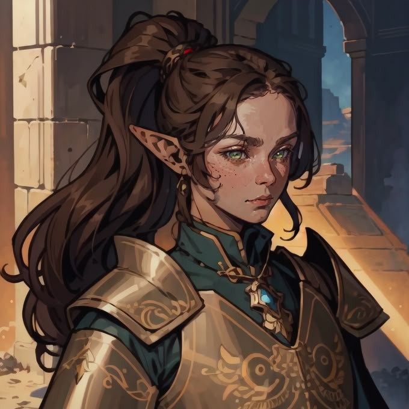

Rosalie
Bard (Whispers) High Elf
HP
/25
Hit Dice
/3d8
Temp HP
Lvl
3
Ability Scores
STR
10
+0
DEX
12
+1
CON
14
+2
INT
10
+0
WIS
12
+1
CHA
16
+3
Saving Throws
STR : +0
DEX : +3
CON : +2
INT : -0
WIS : +1
CHA : +5
Skills
Acrobatics
+2
Animal Handling
+2
Arcana
+1
Athletics
+1
Deception P
+5
History
+1
Insight
+2
Intimidation
+4
Investigation P
+2
Medicine
+1
Nature
+1
Perception E
+5
Performance
+4
Persuasion E
+7
Religion
+1
Sleight of Hand
+2
Stealth
+2
Survival
+2
Stats
Armor Class
12
Initiative
+1
Speed
30
Passive Perception
11
Proficiency
+2
Spells Stats
Lvl 1 Spell Slots
/4
Lvl 2 Spell Slots
/2
Spell Save DC
15
Spell Attack Modifier
+5